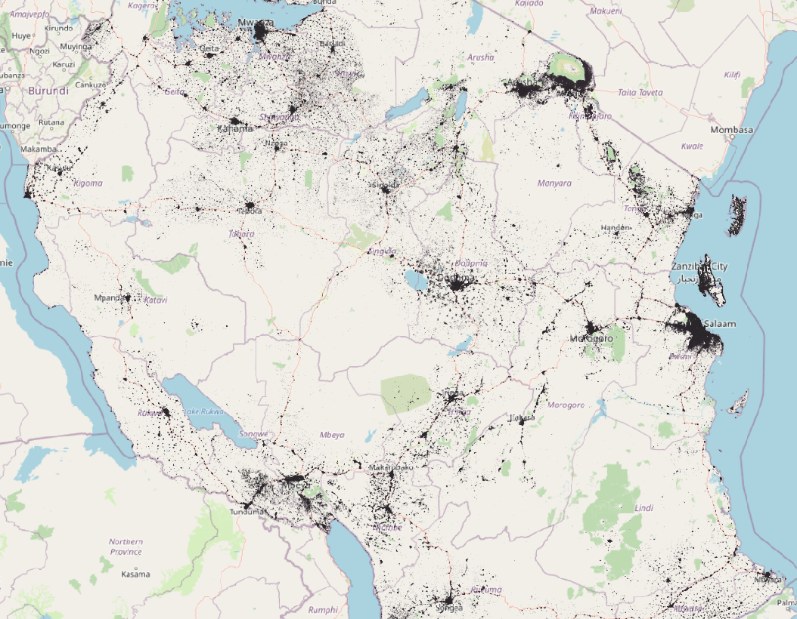

81068 Africa 14 countries GIS landusage
-
./resource/config.yaml
- find relation
- link: https://nominatim.openstreetmap.org/ui/search.html
Tanzania:
mcc: "640"
relation: "195270"
Uganda:
mcc: "641"
relation: "192796"
Nigeria:
mcc: "621"
relation: "192787"
etc...
-
./src/attributes.py
Tanzania = country_config.get("Tanzania").get("mcc"), country_config.get("Tanzania").get("relation")
Uganda = country_config.get("Uganda").get("mcc"), country_config.get("Uganda").get("relation")
Nigeria = country_config.get("Nigeria").get("mcc"), country_config.get("Nigeria").get("relation")
etc...
TZ (Tanzania)
NT2_GEO_POLYGON_Tanzania_81068
-
note : osm_offline_parser.py different Hofn type should be execute seperately
-
1 water, 2 coast line, 7 highway, 11 village
-
1 water
- command:
python osm_offline_parser.py ./data/input/tanzania-latest.osm.pbf 640 '1'
- filter:
area_threshold 40000 (m^2), area_perimeter_ratio_threshold 0.35
-
2 coastline
- pin NT into map for filter
- all coastline
- draw an area manually in https://geojson.io/#map=2/0/20
- locate .geojson in path:
./data/output/Tanzania/limit_polygon/custom
- name as:
limit_polygon.geojson
- coastline
- download whole Africa data
africa-lastest.osm.pbf
- command:
python osm_offline_parser.py ./data/input/{}.osm.pbf 640 2 -locli
- filter: <4000 (m)
- 3 areas at lack in the country boundry
- command:
python osm_offline_parser.py ./data/input/tanzania-latest.osm.osm.pbf 640 1 -relation 2606941 -locli
./data/output/Tanzania/water/custom/raw_processed/water_relation_[2606941].tsv./data/output/Tanzania/water/custom/raw_processed/island.tsv
- merge all data
-
7 highway
- command:
python osm_offline_parser.py ./data/input/tanzania-latest.osm.pbf 640 '7'
-
11 village
- command:
python osm_offline_parser.py ./data/input/tanzania-latest.osm.pbf 640 '11'
-
merge all data
python geo_polygon_generator.py 640 '1 2 7 11'
-
Validation
- FINISH
- write
log in Hofn wiki
- write
readme.txt in \\INTERNAL1\Project3\CovMo\Module\Geolocation\Landusage_Hofn\Project_base_OSM_data\
- reply ticket: provide screenshot in ticket
PU_building_Tanzania_81068
-
building data source: OVERTURE MAPS (https://github.com/OvertureMaps/overturemaps-py)
-
rules
- filter buildings < 100 m^2
- buffer 10 meter
- merge overlap buildings
- fill in holes < 10000 m^2
-
df shape: (30650235, 2) -> (963176, 1)
-
details
-
raw buildings area interval
Count Percentage
area_interval
0-25 m² 12231271 39.905968
25-50 m² 10203346 33.289623
50-100 m² 5367343 17.511591
100-150 m² 1494281 4.875268
150-200 m² 683308 2.229373
200-250 m² 311780 1.017219
>250 m² 358901 1.170957
- holes after buffer and merge
0-10 m² 55866 35.690283
10-50 m² 34327 21.929981
50-100 m² 16131 10.305373
100-200 m² 15239 9.735514
200-500 m² 16411 10.484252
500-1000 m² 8623 5.508848
1000-1500 m² 3327 2.125471
1500-2000 m² 1796 1.147384
2000-10000 m² 4159 2.656999
>10000 m² 651 0.415895
- screenshot
-

- der es-salaam
-